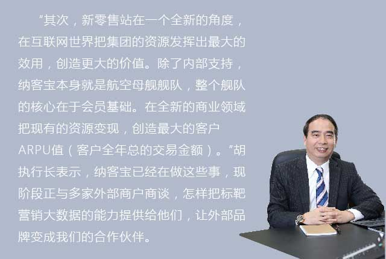

有一年，胡兴民的职业生涯就满30年了。回首这几十年间，他形容自己早期在IBM工作时是个工作狂，第一年从来没有在晚上12点前下班，都是被老板催着才离开。到了Intel后，他把过去在P&G销售洗发水的经验用在卖CPU上，创下盒装CPU的销售先河，令同仁大开眼界。
有志者事竟成，从快消品到电脑行业再到互联网，由品牌助理到CEO，胡兴民朝着自己的理想步步迈进，“当很多想法在实践中得到验证并成为现实时，这种喜悦感是无法用语言来形容的。“他回忆道。前两年还在念博士、在上海交大EMBA当客座讲师的他于2017年元月履职便利餐饮连锁事业新零售事业群执行长，满怀着打造全新事业的气魄和决心，执掌新零售的现在与未来。
炮兵导弹和航母舰队，新零售分饰两角
新零售是眼下的热门词，它涵盖了虚实整合、会员、大数据和物流等关键字。正如董事长阐述的“六把金钥匙”概念：第一是虚实（线上线下）整合，重视客户体验，全由他们选择到店里还是网上消费；第二以会员管理为基础；第三是以科技为导向，整合大数据，借助互联网收集消费者行为与交易信息；最后就是物流，强大的供应链体系支撑着后端。前端让客户自己选择到实体店还是网上，在他们的消费过程中我们把数据整理起来，加上会员制，这就连接成全面的闭环系统，与客户形成极强的粘性。
“新零售扮演着两个角色，首先它是集团其他事业体的炮兵或导弹部队，在纳客宝的集享卡会员制的基础上收集大数据，协助德克士、全家等品牌从数据营销的角度做得更好。”胡执行长认为这是新零售事业的第一个任务，如何把互联网的元素融入集团，让品牌更具竞争力，并加紧与外部品牌的合作，“像全家四代店的新科技元素如每天到全家check in，我们做得不仅要炫，更要好玩，以此吸引客户，让客户天天都想来全家或德克士玩。”
扩充积分范围，最大化会员价值
会员机制已占集团所有品牌60-70%的零售销售，其中尊享会员比一般会员的消费频率高出3-5倍。今年尊享会员的目标是达到250万，虽然只占3000多万会员中的10%，但是他们的销售贡献可超过60%以上。“这是最有价值的部分，日积月累后将非常可观。每个人都会有这种心态，我花钱成为会员，不捞一点回来岂不是对不起自己？所以尊享会员的消费就会集中过来。”胡执行长道出了人们的消费心理。
他介绍：“集享卡要做到像微信这样的社交功能不太容易，但我们可以另辟蹊径，开发小游戏功能，会员之间可以发积分红包，拉动彼此的社交圈。由于90%的会员都是80、90后，所以我们的目标是能够拉住年轻人的心，成为他们日常生活的伴侣。”从纳客宝来说，这将是积分范围扩大的好机会，增强可用性。“想象一下，将来集享卡可以延伸到各类领域的商户累积、兑换积分，那就非常厉害了，我们希望打通消费者的食衣住行育乐方方面面的消费需求，达到时时积累积分、处处兑积分的境地，想想如果你每天中午从网上外卖或全家盒饭的积分，最终可以拿来买个鞋买个包，甚至免费到好乐迪K歌，这样的积分生活是不是很棒啊！另外，不同节日甚至自创节日、寒暑假的应景优惠活动等等，都会吸引年轻人，把互联网生活化融入到我们的平台。”
甄会选就是航母舰队延伸出的首个产品。它类似美国的Costco，盈利点基本来源于会员费，所以要求产品毛利够基本运营开支就够了，其价格一般会低于市价20%-30%，所以极具市场竞争力。“甄会选的定义就是会员制的线上超市，它的目标客户是小资白领，目前已有30万会员，今年目标要达到250万人。集团与海外很多企业保持着非常好的关系，特别是日、韩两国。所以航母舰队的基础和资源已经有了，就看如何选择商品，采购商品要集中在一些热门品项上，范围不能太广，从互联网经济的角度来看怎样可以落实。”胡执行长认为如果商品大而全就失去了甄会选的价值所在。
要跟上快速迭代的新零售步伐，物流体系也必须进一步加强。很多时候，消费者在甄会选购买商品后需要2天以上才能收到货。“了解供应链的流程后，我知道为了符合原来全家便利的作业习惯，物流公司一天只取一次货。然而全家的备货是有预测性的，对甄会选来说就不能满足客户的需求，如果一天拿两次货就可以解决部分的问题。等订单量上涨到一定程度，适当提高物流公司的费用，在短期也是需要忍受的。宁愿多花钱给物流公司还是要得罪客户降低购物体验值？相信这不难选择。”与何执行长商讨后，胡执行长很快提出“提早传输订单给仓库”以及“增加一次物流公司取货时间”，这样平均订单处理时间就减少了12到24小时，我们明显感觉到甄会选的到货时间的确加快了。
做大新零售的池子，收纳外部商户
怎样用互联网的思维做虚实、跨业整合是新零售事业迫切要做的事，在不久的将来，我们会看到新零售事业一系列的新动作。胡执行长和他的团队正积极筹备前期工作，“我们在考虑其他的布局，设计一个新的商业模式，这个模式将包含了几个‘战队’扮演者分进合击的角色。像天猫，绝大多数商家在天猫都赚不到钱，因为进场要费用、做广告要费用，做了广告也不保证有流量，有流量也不保证有交易。对商家来说，既要让利给消费者，又要交钱给天猫，所以很难赚到钱。如果我们创建一个平台，商家不用交钱给我们，而把这费用转成积分给消费者。比如卖100元的东西，其中10元作为积分发给消费者，发的时候我们不收钱，但会记录积分，消费者将来再购物就可以用积分兑换（目前集享卡积分兑换率达到70%）。我们从兑换的积分中抽取10%的服务费。所以这样一算，消费者赚了大便宜，而商家在平台经营的成本很低。这种模式强调的是O2O，我们赚的虽然是小头，但是只要基数够大，那就会不得了。”
此外，新零售事业还在与既有线上店又有线下店的品牌商洽谈，希望将集享卡的积分制运用得更广泛。“我们合作时会介入到线上线下，然后请品牌商发我们的积分。我们帮他们管理会员，同时以会员来帮助商家推进业务，那我们的池子就会越做越大。对传统行业来说，最辛苦的就是找新客户，而我们别的没有，最多的就是客户。”胡执行长打趣道。
重视“增值会员”，打好微生态圈的战役
在集团里最宝贵的资源就是会员，尤其是尊享会员，这些消费者每年花了100元来维持他们和我们的关系，就像前面说的这些人一旦成为“付费会员”就会想方设法地让这个投资效益最大化，如何最大化呢 ? 董事长提出了“微生态圈的构想”，微生态圈的规划、发展、协作与丰富化，就成了新零售事业群的另一个重要职责，为此新零售事业群另一个新的战队也将产生。胡执行长表示，这个微生态圈战队将会把全国各地划分为每一平方公里的许多个重点商圈进行分析，了解每个重点商圈的消费者特性，因为全家具有网店广布、刚需、高频消费的特色，所以将以全家作为强入口，依次引进集团中的其他业态，使得在一个重点商圈里，密集聚拢着集团的其他业态，并在适当时间引入其他业态加盟，这样消费者在这一平方公里范围内，就可以满足他们在食衣住行育乐上所有的消费需求，这些业态彼此分进合击，就能够创造最大的客户满意，也就是零售追求的消费者最大的ARPU值。
以纳客宝现有的技术，不管消费者位于内地的哪个地方、在哪家门店买了什么、哪些人喜欢喝咖啡、哪些人常买盒饭、到店次数和频率，都可以实时掌握。按不同人群分类，可以向他们推荐不同的促销活动。“纳客宝不仅是技术团队，还要用写出来的程序推进业务，有助于业务的增长，吸引消费者。我们3000万的会员活跃度很高，但目前缺的是商品，把商品做扎实，客户体验好，自然就能做好。”胡执行长形容互联网的人做事风格类似攻击手，没有百分百的瞄准，先射击再说，打一抢后就知道瞄得准不准，步伐节奏非常快。
胡执行长向我们勾勒的新零售事业蓝图令人憧憬，一张会员卡从交易到生活化的社交，功能陆续迭代，让消费者随时随地感受“会员”的用武之地。如何协调好传统零售业与新零售之间的博弈、利用好现有的客户资源和物流体系，或许是胡执行长所要着手解决的。
在您近30年的职业生涯中，除了前十年在台湾，之后就“飘泊”在海外工作，例如香港、新加坡以及内地，是不是已经习惯走南闯北的生活了？
像我这样在内地走南闯北的人大概真不多，我去过很多县级市以及各个村镇。西到伊犁，北到漠河，我都去过。曾经因为工作，我们四次沿着河西走廊从北京开车到乌鲁木齐。今年过年去哈尔滨时，我跟当地导游说我去过黑龙江省的哈齐牡佳大鸡鸭鹤（哈尔滨、齐齐哈尔、牡丹江、佳木斯、大庆、鸡西、双鸭山、鹤岗）。导游都没有去过这么多地方。
我在上海11年了，家人也在上海，在用词上都习惯说“回”上海。过年时，我父亲常常叫我别去台湾，他到上海来。父亲是1949年跟着部队撤退去台湾，当时部队就在上海五角场的军区驻扎，撤退时从上海十六铺码头出发。每次他来上海，我常会陪他去看看国民政府时期遗存的建筑。
您的职业经历非常丰富，涉及多个领域，对年轻人挑选工作有什么建议？
原来也没有想过这么多，现在回头看发觉行业跨度确实很大，P&G、IBM、Intel、EBay、海尔，每个行业似乎没什么联系，可是最后却发现最终还是一个圈，他们是相互靠拢且组合的。
其实在不同行业中的经验可以互相参考，我觉得挺不错的。当年在Intel的时候，CPU都是散装的，还没有当品牌卖的盒装CPU。我把过往在宝洁售卖洗发水的方式搬到Intel上，就成了一种史无前例的创新的事情。圣诞节时，商场一条街整排都是一颗颗硕大的闪闪发光的圣诞树，走近一看全是Intel的盒装产品。当时宝洁的主席到台湾超市一看，惊呼道：“你把CPU当肥皂卖啦？”所以从我自身的经验来看，混血比纯种更好，相互借鉴、互取优势，能激发出不同角度的思维。
时代在变迁，像IBM曾是台湾大学生心中首选的第一志愿公司，之后是Windows/Intel这类微型电脑公司的崛起。以前我觉得一份工作不做五年不会有感觉，对现在的年轻人来说，面对的是互联网时代，变化太快，很多年轻人也是被逼在换工作。像二、三年前搞得很火的团购，现在已经奄奄一息。所以选一份理想的工作，一方面要有稳定性，有传统的优势做支柱，另一方面也要有创新精神，跟上互联网的步伐。
当然工作环境很重要，行业对不对、老板好不好、周边的同事是否合拍是我选择顶新的重要原因。来到这里后，发现好多老朋友，以前IBM\HP、P&G共事过的同事，台湾交大的学弟学长，很多人都有信任和了解的基础，正因为有这些共同的渊源，大家工作起来才会更顺畅。
对于员工管理、留住人才，您有何管理理念？
他们都说我很残酷，到一个新公司很少会带人进去。来到顶新，为了增加互联网的基因，我带了一、二位同事来。我想强调一点：我不会放弃任何一个人，如果没有互联网经验，没关系我可以教你。我也不会放过任何一个人，为了达成目标， 我推动你的力度绝对不会松手，一定把你发挥到极致。
每个层次的人需求不同，工程师需要创作空间，做出来的程序有人能用；有经验的人希望受到尊重；有些人则希望有创业的机会。所以不同的人有不同的需求，作为管理者应该设法满足他们。我的角色更多的是设定方向，然后教你怎么玩。
您最在意的是什么？
家庭是每个人的追求，家庭和乐很重要。工作上则是身边的这些人，老朋友也好、纳客宝共事的人也罢，都是很宝贵的。